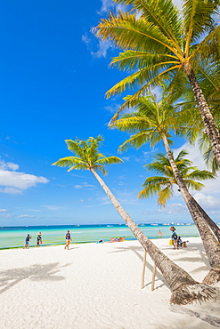
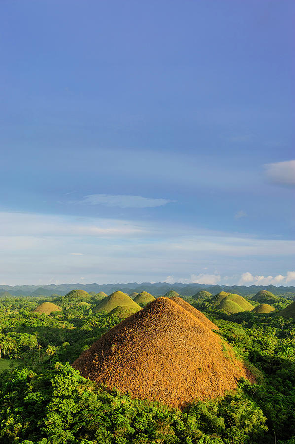
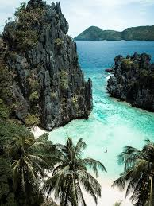
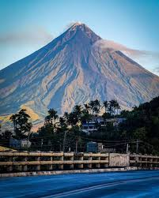
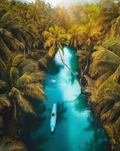
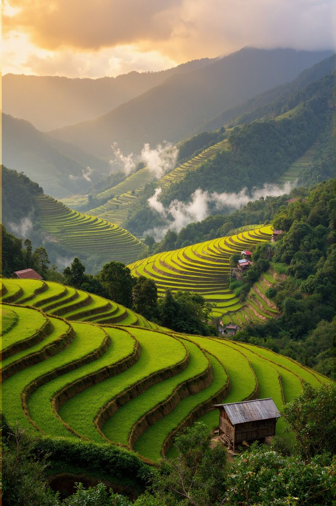
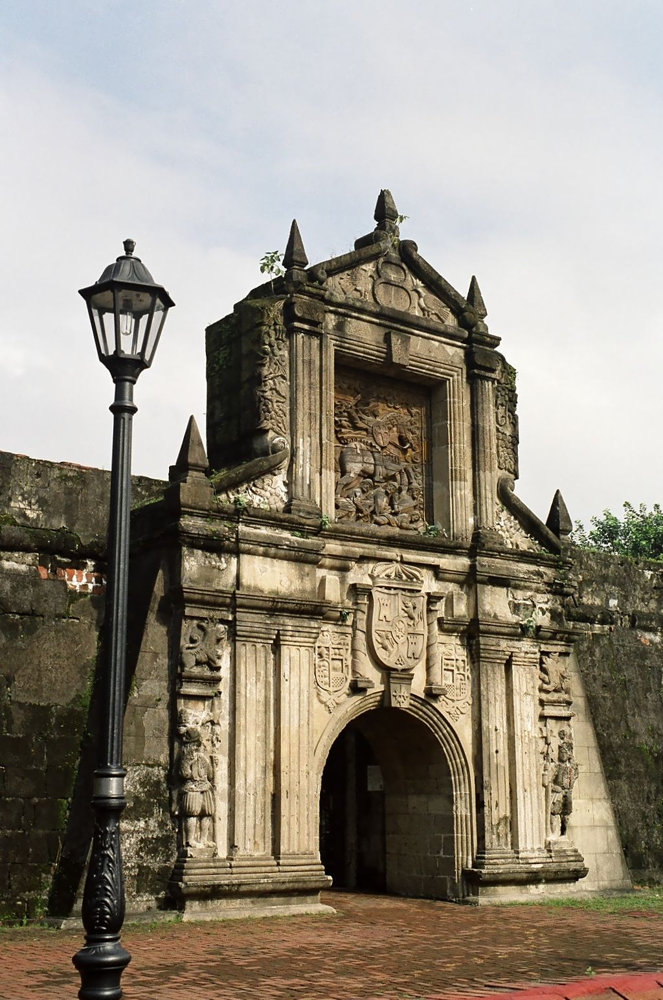
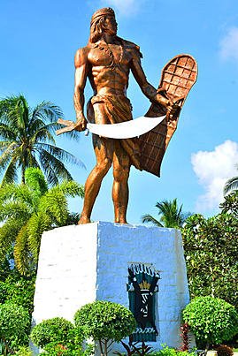
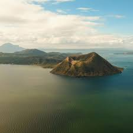

Top 1

Boracay
Famous for its white sand beaches and nightlife.

Famous for its white sand beaches and nightlife.

A Unique natural hills that turn brown during dry season.

Known for crystal-clear waters, lagoons, and island hopping.

A Popular for its perfect cone shape.

Famous surfing destination with beautiful islands.

Ancient rice terraces built in the mountains.

Historic Spanish-era walled city.

Known for beaches, history, and whale shark watching.

Famous for preserved Spanish colonial streets.

One of the world’s smallest active volcanoes.